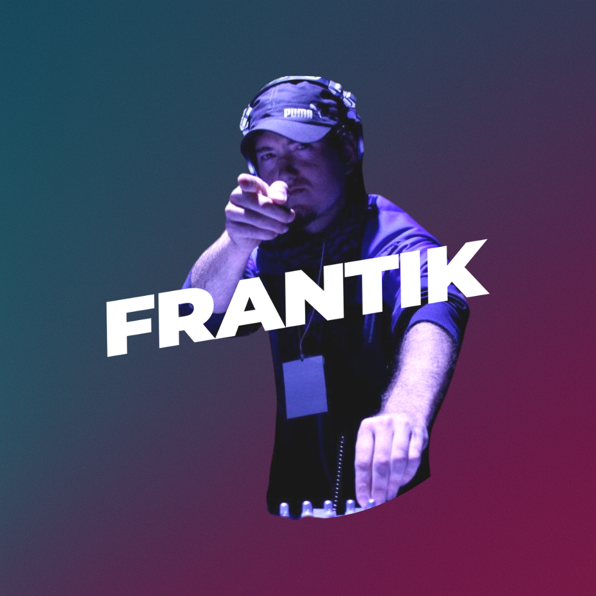

Frantik
Frantik es un productor y DJ que canaliza la energía de la música melódica con una estética minimalista. Su sonido se caracteriza por estructuras hipnóticas, capas ambientales y ritmos precisos. Cada presentación en vivo es una experiencia inmersiva que invita a la introspección. Frantik combina técnica refinada con una pasión por lo etéreo, cultivando una identidad sonora que desafía las normas del techno convencional.
Set Reciente
Sigue a @frantiknology en Instagram